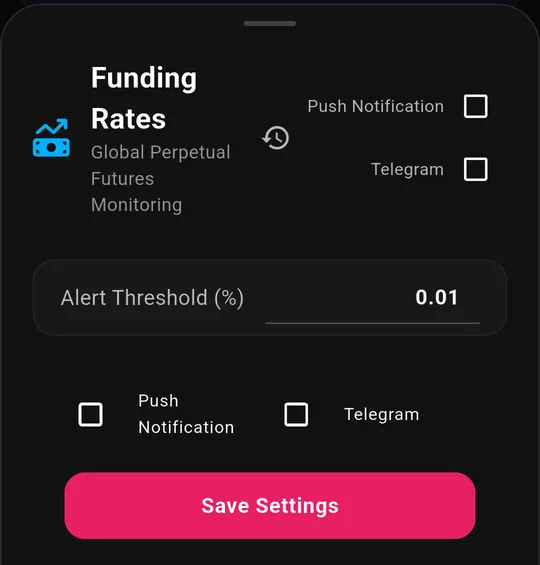

Funding Rate Alerts Explained: Trading Crowded Positions
Funding rate is the closest thing crypto has to a crowd meter. It tells you which side of the market is paying to stay in its trade, and how much that privilege is costing them.
When funding goes extreme, it means positioning has become lopsided. That does not guarantee a reversal, but it does tell you where the squeeze risk sits.
This guide covers what funding actually is, how to read the number, what counts as extreme, and how funding rate alerts tell you the moment a market gets crowded.
What Is a Funding Rate?
A perpetual futures contract never expires. That creates a problem: with no expiry to force convergence, nothing stops the contract price drifting away from the spot price.
Funding is the fix. Every few hours, one side pays the other:
- Positive funding: the perp trades above spot. Longs pay shorts. The crowd is long.
- Negative funding: the perp trades below spot. Shorts pay longs. The crowd is short.
The payment makes the crowded side expensive to hold, which nudges the contract back toward spot. On Binance, funding settles every 8 hours by default (at 00:00, 08:00 and 16:00 UTC), and some contracts move to 4-hour or 1-hour intervals when rates hit their caps. The payment goes directly between traders, not to the exchange. See Binance's funding rate documentation for the exact mechanics.
Two consequences worth internalizing:
- Funding is a cost you pay for holding, not a fee on trading. Scalpers rarely notice it. Anyone holding leverage for days absolutely does.
- The sign tells you the consensus. Persistently positive funding means the market is paying a premium to be long, which is the definition of a crowded trade.
Reading the Number
Funding is quoted per interval, not per year, which is why it looks small until you annualize it. The table below assumes the standard 8-hour interval.
| Funding rate (per 8h) | Per day | Roughly per year | What it says |
|---|---|---|---|
| 0.01% (the "normal" baseline) | 0.03% | ~11% | Balanced market |
| 0.05% | 0.15% | ~55% | Getting one-sided |
| 0.10% | 0.30% | ~110% | Crowded |
| 0.20% | 0.60% | ~220% | Heavily crowded |
| 0.60% | 1.80% | ~657% | Extreme: rare, and it does not last |
Annualized figures assume the rate persists, which it usually does not. They are there to show what the market is willing to pay right now.
At 0.20% per interval, longs are paying roughly 0.6% a day just to keep the position open. Price has to keep moving their way simply to break even. That is the pressure that makes crowded trades unstable.
Why Extreme Funding Matters
Three things follow from a very high funding rate, and only the first is certain:
- Holding costs money. Certain. If you are on the paying side, the clock is working against you.
- Positioning is lopsided. Very likely. Funding is a price: it went up because demand for that side went up.
- A squeeze becomes more likely. Possible, not guaranteed. Crowded leveraged positioning is exactly what fuels a cascade when price turns, because everyone is offside at the same level.
The mistake people make is treating high funding as a countertrend signal on its own. Funding can stay extreme through an entire trend while every fader gets run over. Treat it as fuel, not as a trigger: it tells you how violent a move would be if one started, not that one is starting.
Funding pairs naturally with liquidation data for this reason: funding shows the crowd building, liquidations show it being cleared out. Read the liquidation alerts explainer for the other half of the story.
What It Costs in Practice
Percentages per eight hours are hard to feel. Money is not. Take a $5,000 position at 10× leverage ($50,000 of exposure) on the paying side of funding:
| Funding rate | Cost per interval | Cost per day | Cost per week |
|---|---|---|---|
| 0.01% | $5 | $15 | $105 |
| 0.05% | $25 | $75 | $525 |
| 0.10% | $50 | $150 | $1,050 |
| 0.20% | $100 | $300 | $2,100 |
At 0.20%, that position bleeds $300 a day against $5,000 of your own capital: 6% of your margin per day before price moves at all. Hold it a week and funding alone has taken over 40% of your margin.
This is why crowded positioning is unstable. It is not sentiment; it is a bill arriving every eight hours, and it forces the crowded side to either be right quickly or get out.
Setting Up Funding Rate Alerts
BitLogic polls perpetual futures funding across the market and alerts you when a symbol clears the threshold you set.

The default is 0.01%, which is the ordinary baseline, useful if you want to see the whole landscape. Most traders want less than that.
| Threshold | Fires when | Suits |
|---|---|---|
| 0.005% | Almost anything off-neutral | Research, not alerts |
| 0.01% | Normal-to-elevated | Watching the whole market |
| 0.05% | Clearly one-sided | Most traders |
| 0.10% | Crowded | Swing traders |
| 0.20% | Heavily crowded | Squeeze hunters |
| 0.60% | Extremes | Rare events only |
0.05% to 0.10% is the sweet spot for most people: frequent enough to catch real crowding, quiet enough that each alert means something.
The alert names the symbol, the rate and which side is paying, so you can tell a crowded-long market from a crowded-short one immediately.
Why You Won't Get Spammed
A naive funding alert would re-fire every poll for as long as a symbol stays elevated. On a busy day, that is hundreds of notifications about the same handful of coins. The feed is designed against that:
- It re-alerts on change, not on persistence. A symbol that is simply still extreme does not notify you again. It has to cross into a higher tier, flip direction, or keep growing.
- A quiet window between repeats. Once a symbol has alerted, it waits hours before it can alert again, and even then only if the rate has grown meaningfully, not drifted sideways.
- No restart floods. When the backend restarts, the first pass records where every symbol already sits without broadcasting. Otherwise a routine deploy would fire hundreds of alerts for conditions that were already true.
That last one is the difference between an alert service you keep and one you mute in week two.

Funding sits alongside liquidations, volume spikes, price anomalies and open interest, each with its own threshold and each switchable on its own. See the full list of BitLogic alert types. Download BitLogic free on Google Play to switch on funding rate alerts in a minute.
FAQ
What is a normal funding rate?
Around 0.01% per 8-hour interval is the usual baseline, roughly 11% annualized. Sustained readings above 0.05% mean positioning is getting one-sided; 0.20% and above is heavily crowded.
Does negative funding mean the price will go up?
No. Negative funding means shorts are paying longs, so the crowd is positioned short. That raises squeeze risk if price turns, but funding can stay negative throughout a downtrend. It measures crowding, not direction.
Who pays the funding rate?
Whichever side is crowded. Positive funding: longs pay shorts. Negative funding: shorts pay longs. It is paid between traders, not to the exchange.
What threshold should I set for funding rate alerts?
0.05% to 0.10% suits most traders. Use 0.20% or higher if you only want genuine extremes, and 0.01% if you want to watch the whole market's positioning.
Do funding alerts work when the app is closed?
Yes. They arrive as push notifications with the app closed, and on Pro they are delivered to Telegram as well.
The Bottom Line
Funding rates tell you what the crowd is paying to hold its opinion. When that cost spikes, positioning is lopsided and the market has become fragile, whichever way it eventually breaks.
Set your threshold where crowding becomes interesting to you, read the sign to see which side is trapped, and use funding as context alongside price and liquidations rather than as a signal on its own.
Download BitLogic free on Google Play, switch on funding rate alerts in a minute, and start the 14-day Pro trial when you want them delivered to Telegram.
Educational content only, not financial advice. Funding cuts both ways, and crowded trades can stay crowded far longer than a position can survive.